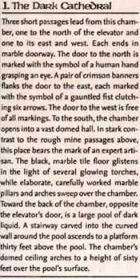
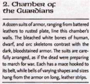
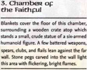
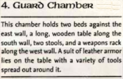
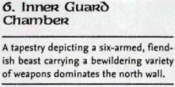
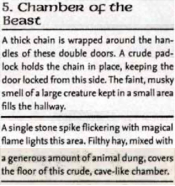
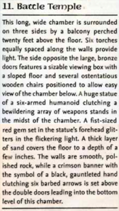
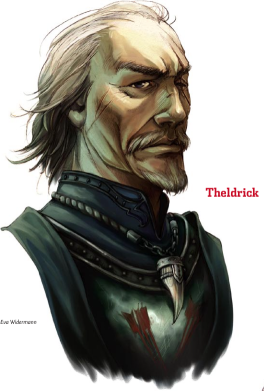

Week 6 - A mission from Allustan. Infiltrations, and overcoming the first of three.
Bloody Hell! A big session this week, with full attendance. We arrived at 7, and played about 7:30 to 11:30. I'll do my best to remember how it went down.
Note to self: next week, get new Dave sitting up next to the DM - he gets a bit quiet.
Fresh from their adventure at the Whispering Cairn, Allustan discusses with the party the grave import of the worm the found in the possession of Filge the Necromancer at the old observatory. This worm, it seems, was the final piece of a puzzle that Allustan had been preoccupied with for months. Increasing evidence of strange undead infested with tiny green worms stalking the hills to the northwest.
His studies show that these worms are very probably connected to some sort of ancient structure beneath the depths of what is current Ragnolin Dourstone's
Allustan suggests that Balabar Smenk may very well be of some assistance. Flash suggests that he disguise himself as Filge, and talk to Smenk, on the chance that Smenk has not yet discovered Filge's death. When the party ask "How, but how will you accomplish such a thing?", Flash finally reveals his secret. No half-elf at all, he, but a changeling - a race descended from an ancient offshoot of the doppelgangers. Flash forges a letter purportedly from Filge, requesting a meeting. Smenk replies, and suggests "Lazare's Place" on the square.
Flash, in disguise as Filge, takes Frith and Joshua to visit Smenk. There are one or two awkward moments where "Filge" is not aware of information that he ought to know, but Smenk dismisses them as mere necromantic absent-mindedness. Filge suggests that more information is needed about these worms, and that a party should infiltrate the Dourstone mine. Smenk agrees, and suggests that they accompany one of his regular supply wagons. There is an elevator down from the copper mine levels, he explains, to the depths where lies some sort of ancient temple. Connected to that temple are three areas, each owned by one of the three factions of the cult below, but he is only familiar with one of them - some sort of maze within which is the room where the supplies are stored. His supply cart can get the adventurers to the top of the elevator - after that, they are on their own.
The party get to the elevator without incident and winch themselves down. Below, they are challenged by a couple of bored and inattentive guards. Without a token to show the guards, one attacks - revealing himself to be a tiefling - an the other rushes to the eastern door. It's a bit of a tight squeeze in the elevator, but Tom makes a new door in the wooden structure, and Flash hits the rushing guard with a sleep spell to prevent him from alerting whomever he was going to alert.
After a brief fight, the party looks around. To the south is a large black pool. Frith detects evil - enormous evil - in the pool, and some off to the east behind the door that the second guard was running towards. The three doors bear symbols of three of the Dark six of Eberron:
- To the north, The Shadow - god of evil arcane magic
- To the west, The Keeper - god of death
- To the east, The mockery - god of dishonourable battle
Frith finds this particular confluence significant, and recalls mention of a group named "The Ebon Triad", an evil cult dedicated to merging these three deities into some sort of mighty overgod.
The party elect to enter the east door first, the one bearing the symbols of The Mockery, and it's game on.
Within are a group of eight skeletons. As the party did not use the secret knock, they move to attack. These are not much of a threat - Arn and Tom quickly dispose of some, while Frith calls upon the power of his faith to destroy most of the remaining. However, the skeletons were festooned with bells, which ring and clang as they attack. From the left door emerge several cultists armed with spears and daggers, and from the right emerge a pair of tieflings.
The foe quickly realise they are outclassed and begin to retreat along a broad corridor to the north (we'll just call it north, ok?). There's a bit of a logjam, and only two or three make it through. One unlocks a set of doors on the left of the corridor, another dashes off down a corridor to the right, opposite those doors. The other heads to the double doors at the end, to the north.
Arn and Tom pursue the few that made it through. Tom heads to the north, to the big door. Arn heads off down the corridor to the right. At the end of that corridor is a closed door. The cultist is shouting "Intruders! Intruders! Intruders in the complex!", and Arn cuts him down. At this point, Baby emerges from the door on the left, sees Arn down the corridor opposite, and charges. Tom sees the dire boar rush past him and manages to get an attack of opportunity, but not enough to drop it, and it hits Arn.
Flash and Frith head north to lend a hand to the tanks, while Joshua stays behind to clean. Arn and Tom dispose of Baby, although at some cost. The party spend a moment to heal up, and then decide to tackle whatever lies behind the large doors at the end of the corridor.
They enter a large hall, with a balcony running around it at about 15-20' or so. In the middle stands a large statue, some 30' tall. Tom wastes no time giving Joshua a leg-up, and joshua climbs onto the balcony. As this happens, three persons enter the central viewing box at the top - Theldrick, Garras, and Kendra. Theldrick,  the leader, sits in a sculpted stone chair and the great double doors slam closed. The party are trapped in the Arena of Battle.
Well. A lot of stuff happens next, and I am totally not going to give a blow-by blow account. The party have three things going for them:
- Although the cultists and guards managed to draw the party north into the arena, none survived, and so the party were not spending time in melee or taking AAOs when casting spells
- Kendra ran down the balcony to the side of the room in order to get everyone within the rang of her Bane spell. This separated her from the other two. Ironically, we totally forgot to factor in the effect of the bane
- The DM has never played a battle cleric. If I had three players playing those casters up against the party, the party would have been toast.
Even so, it was a close thing. I was fully prepared to TPK and played the battle straight.
- Arn discovered that the statue was poorly fixed on its base and could be pushed over, giving access to the balcony. However, it counted as difficult terrain and balance checks were required. He ran up it and did some good work on the balcony, but was overcome by a Fear spell.
- Tom was Held at one point, but managed to shake off the effect after a round. He did not, however, shake off the effect of a couple of war arrows in the back fired by a couple of teifling guards up in the balcony.
- Flash managed to get them with a sleep spell (both failed their saves, luckily - their fire would definitely have defeated the party), but was hit by a Sound Burst from Kendra and then, cripplingly, by a Silence. He took cover under the tipped-over statue and took out his crossbow, but to little effect.
- Joshua, meanwhile, had climbed onto the balcony. He made cunning use of a couple of items with Darkness still on them so as to conceal himself from the Teifling archers, and headed toward the view box. Unfortunately, he was spotted by Garras who fought him and disabled him.
Frith casts Sanctuary and goes to heal Joshua, but can't squeeze past Garras. So instead he goes downstairs via the statue (losing his balance and falling to the floor) to revive Tom. Tom, revived, ascends the statue onto the balcony and disposes of Kendra, freeing Arn from his magical fear. The two then move down toward the main viewing box.
Theldrick has not been idle. After summoning monsters and calling a Spiritual Weapon to harass Frith, he has spent a couple of rounds buffing. He calles Garrick to fall back so that they two could fight together, forcing the players to approach the box one at a time along the balcony.
Tom approaches certain death, for either of these two - Garras or Theldrick - will easily dispose of the party's glass cannon. But Tom swings at Theldrick, and it is just a classic, classic end to a fight that nearly defeated the party. He pivots just right, and his goliath hammer connects at exactly the right spot on Theldrick's head. Theldrick's skull is not simply crushed, but the shock of the impact sprays his brains out the other side in a mini fountain of gore. (Half-Ogre with goliath hammer - we are talking 80-something points of damage on a crit). Following through, Tom also dispossd of Garras - although in less spectacular fashion.
The fight over, the party loots the bodies and takes stock.
And that's where matters stand - the first BBEG disposed of. Some loot, and a couple of keys, but their strength badly sapped by the encounter. Will they succumb to the lesser dangers remaining in the Temple of The Mockery, after succeeding so heroically against its priests? We find out next week.